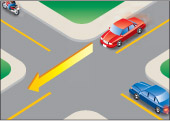
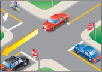
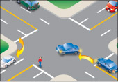
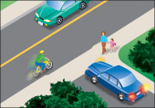

चौराहों से होकर गाड़ी चलाना
चौराहों पर आते समय सतर्क रहें और पैदल यात्रियों, साइकिल सवारों, अन्य वाहन चालकों, 'रास्ता दें' संकेतों, 'रुकें' संकेतों और यातायात बत्तियों पर ध्यान दें। फुटपाथों और पगडंडियों के साथ-साथ सड़कों पर भी नज़र रखें। ध्यान रखें कि बच्चे अक्सर यातायात नियमों से अनजान होते हैं और यह भी कि फुटपाथ पर साइकिल चलाना स्थानीय नियमों के अनुसार अनुमत हो सकता है।

आरेख 2-18
चौराहे दो मुख्य प्रकार के होते हैं: नियंत्रित और अनियंत्रित।
नियंत्रित चौराहे

आरेख 2-19
नियंत्रित चौराहों पर यातायात को नियंत्रित करने के लिए ट्रैफिक लाइट, यील्ड साइन या स्टॉप साइन होते हैं (आरेख 2-19)।
नियंत्रित चौराहे पर, जहाँ हरी बत्ती हो, स्थिर गति से सावधानीपूर्वक गाड़ी चलाएँ। यदि बत्ती काफी देर से हरी है, तो पीली होने पर रुकने के लिए तैयार रहें। हालाँकि, यदि आप चौराहे के इतने करीब हैं कि सुरक्षित रूप से रुकना संभव नहीं है, तो सावधानी से गाड़ी चलाएँ। लाल बत्ती होने पर, पूरी तरह से रुकें और हरी बत्ती होने तक प्रतीक्षा करें।
जब आप किसी मुख्य सड़क पर चौराहे के पास पहुँचें और वह चौराहा वाहनों से भरा हो, तो चौराहे में प्रवेश करने से पहले रुकें और आगे के वाहनों के निकलने तक प्रतीक्षा करें। यह नियम बाएँ या दाएँ मुड़ने पर लागू नहीं होता।
किसी नियंत्रित चौराहे पर जहां आपको 'यील्ड' साइन दिखाई दे, वहां जरूरत पड़ने पर गति धीमी कर लें या रुक जाएं और चौराहे से आगे बढ़ने से पहले रास्ता साफ होने तक प्रतीक्षा करें।
किसी नियंत्रित चौराहे पर जहां स्टॉप साइन लगा हो, वहां पूरी तरह से रुक जाएं। चौराहे से तभी गुजरें जब रास्ता साफ हो (आरेख 2-19)।
अनियंत्रित चौराहे
अनियंत्रित चौराहों पर कोई संकेत या ट्रैफिक लाइट नहीं होती हैं। ये आमतौर पर उन क्षेत्रों में पाए जाते हैं जहां यातायात कम होता है। इन चौराहों के आसपास अतिरिक्त सावधानी बरतें। यदि दो वाहन अलग-अलग सड़कों से एक ही समय पर अनियंत्रित चौराहे पर आते हैं, तो बाईं ओर के चालक को दाईं ओर के चालक को पहले जाने देना चाहिए। इसे मार्ग देना कहते हैं।
मार्ग का अधिकार छोड़ना
कुछ ऐसे मौके होते हैं जब आपको रास्ता देना पड़ता है। इसका मतलब है कि आपको दूसरे ड्राइवर को पहले जाने देना होगा। यहां कुछ नियम दिए गए हैं कि आपको कब रास्ता देना चाहिए।

आरेख 2-18
बिना संकेतों या बत्तियों वाले चौराहे पर, आपको अपने से पहले चौराहे पर आ रहे वाहन को रास्ता देना होगा, और यदि आप एक ही समय पर पहुंचते हैं, तो दाईं ओर से आ रहे वाहन को रास्ता देने का अधिकार है (आरेख 2-18)।

आरेख 2-19
ऐसे चौराहे पर जहां सभी कोनों पर स्टॉप साइन लगे हों, आपको सबसे पहले पूरी तरह रुकने वाले वाहन को रास्ता देना होगा। यदि दो वाहन एक ही समय पर रुकते हैं, तो बाईं ओर वाले वाहन को दाईं ओर वाले वाहन को रास्ता देना होगा (चित्र 2-19)।

आरेख 2-20
किसी भी चौराहे पर जहाँ आप बाएँ या दाएँ मुड़ना चाहते हैं, आपको रास्ता देना होगा। यदि आप बाएँ मुड़ रहे हैं, तो आपको सामने से आ रहे वाहनों के गुजरने या मुड़ने का और आपके रास्ते में या उसके पास आ रहे पैदल यात्रियों के पार करने का इंतजार करना होगा। यदि आप दाएँ मुड़ रहे हैं, तो आपको अपने रास्ते में या उसके पास आ रहे पैदल यात्रियों के पार करने का इंतजार करना होगा (आरेख 2-20)। आपको पीछे से आ रहे साइकिल चालकों के लिए अपने ब्लाइंड स्पॉट की भी जाँच करनी चाहिए, विशेष रूप से आपके दाईं ओर साइकिल लेन में, फुटपाथ पर या पगडंडी पर। यील्ड साइन का मतलब है कि आपको जरूरत पड़ने पर गति धीमी करनी होगी या रुकना होगा और चौराहे पर या उससे जुड़ने वाली सड़क पर यातायात को रास्ता देना होगा।

आरेख 2-21
किसी निजी सड़क या ड्राइववे से सड़क में प्रवेश करते समय, आपको सड़क पर वाहनों और फुटपाथ पर पैदल यात्रियों को रास्ता देना होगा (आरेख 2-21)।

आरेख 2-22
आपको पैदल यात्री क्रॉसिंग (आरेख 2-22) और क्रॉसिंग गार्ड वाले स्कूल क्रॉसिंग पर पैदल यात्रियों को रास्ता देना होगा और सड़क को पूरी तरह से पार करने के लिए इंतजार करना होगा।
याद रखें, सिग्नल देने से आपको रास्ता मिलने का अधिकार नहीं मिल जाता। आपको यह सुनिश्चित करना होगा कि रास्ता साफ हो।
सारांश
इस खंड के अंत तक आपको निम्नलिखित बातें पता चल जानी चाहिए:
- नियंत्रित और अनियंत्रित चौराहों के बीच अंतर और उन पर सुरक्षित रूप से कैसे चलें
- मार्ग के अधिकार की अवधारणा और वे सामान्य परिस्थितियाँ जहाँ आपको अन्य सड़क उपयोगकर्ताओं को रास्ता देना आवश्यक है